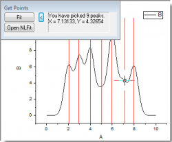

 |
Wenn Sie auf die Schaltfläche NLFit öffnen im Dialog Punkte holen klicken, wird der Dialog NLFit aufgerufen, wobei die Peakzentren mit Ihrer Auswahl initialisiert sind. Sie können den Anpassungsprozess, wie gewünscht, weiterführend steuern. |